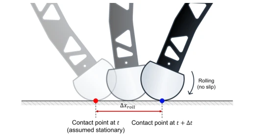
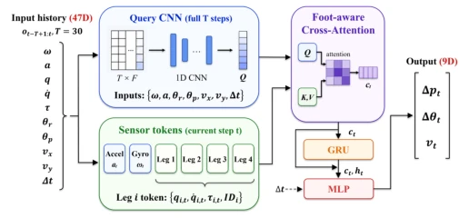
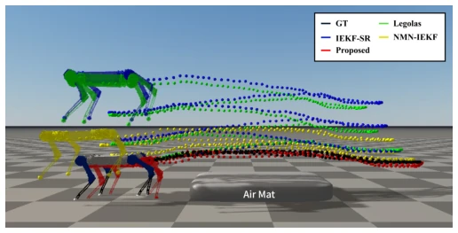
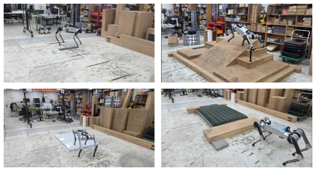
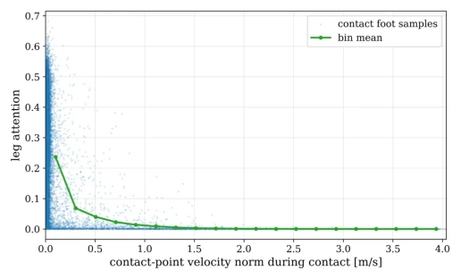
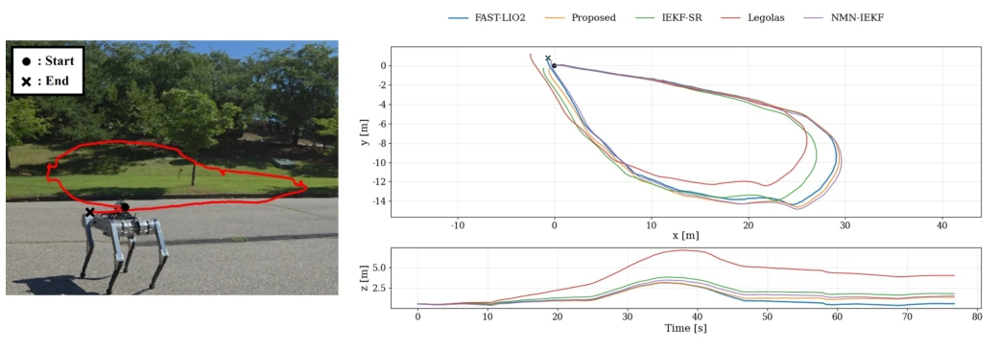
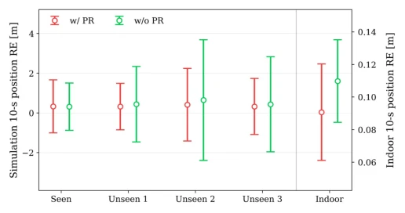

This TRACE paper brings an end-to-end 'brutalist aesthetics' to proprioceptive odometry for legged robots. The authors are clearly fed up with the rigid zero-velocity assumptions in traditional filters, especially on soft ground or when slipping, where IEKF basically fails. They developed a foot-aware attention mechanism, allowing the network to 'adapt to the situation' without manual tuning of contact thresholds, which is quite clever. In training strategy, they employed policy randomization and partial fine-tuning, attempting to bridge the sim-to-real gap. The experimental results are indeed impressive, soft terrain position drift was cut in half, more stable than pure learning Legolas and hybrid NMN-IEKF. However, to be fair, pure learning models are ultimately black boxes; although physics constraint losses were added, the robustness against long-term drift in extreme cases may still be inferior to carefully tuned filters. Moreover, only the Raibo2 robot was used; switching platforms may not allow direct transfer, given the significant differences in foot shape and dynamics. Additionally, real-world fine-tuning data comes only from grass and hard ground, raising doubts about generalization ability to unseen terrains. Overall, it is a practical engineering improvement, with average theoretical depth, but excels in usability, suitable for scenarios requiring high real-time performance.
Reliable proprioceptive odometry is a lifeline for legged robots when vision fails. Existing methods are mainly divided into three categories: classic filters, hybrid methods, and pure learning. Classic IEKF [6] relies on the zero-velocity assumption, but in practice, foot slipping, soft terrain deformation, or rolling will violate this assumption, leading to error accumulation. Hybrid methods such as [10], [11], [14] introduce neural networks but are often coupled at the filter backend, requiring manual definition of contact or slip thresholds, resulting in poor generalization. Pure learning methods like Legolas [15] remove physical models but lack constraints, prone to drift on out-of-distribution data, and have a large sim-to-real gap. This paper aims to solve the state estimation problem under unreliable contact conditions, free from dependence on manual thresholds and filter backends, directly predicting relative motion. Especially regarding contact point offset caused by foot rolling, traditional methods struggle to handle, while this paper alleviates it through physics constraint loss.

Fig. 3. Contact-location shift under no-slip rolling. The overlaid config- urations illustrate how rolling shifts the instantaneous contact location from the initial point (red) to the later point (blue), violating the fixed-foot-point assumption.
TRACE is an end-to-end network, input is IMU and joint data from the past 30 steps, output is relative displacement, rotation, and velocity. Architecturally, CNN first encodes historical motion as Query, then processes IMU and 4 legs' Tokens through a Foot-aware Cross-Attention module. This module adaptively weights information from different legs, without using contact thresholds. Training uses three losses: estimation loss (Smooth L1), kinematic consistency loss (displacement and velocity integration consistency), foot velocity loss (penalize contact point velocity, encourage reliable legs). Training is divided into two stages: first pre-train in simulation using Policy Randomization, then fine-tune GRU and MLP head on real-world data, freezing CNN and Attention to prevent overfitting. Foot velocity loss uses stop-gradient to prevent attention collapse, ensuring the network learns true physical laws rather than shortcuts.

Fig. 2. Overview of the proposed foot-aware attention-based estimator. A history-conditioned CNN query attends to current IMU and leg-wise tokens, and the resulting context is passed through a GRU and MLP head to predict relative displacement, relative rotation, and body-frame velocity.
实验Experiments
在 Raibo2 机器人上测试，室内有平坦、粗糙、打滑、软地面，室外有草地、硬地、楼梯。基线包括 IEKF-SR [23], Legolas [15], NMN-IEKF [11]。指标是 ATE 和 10s RE。结果 TRACE 在所有地形上位置误差最低，软地形 ATE 降低 53.8%。注意力分析显示网络确实给接触脚更高权重，且随接触点速度增加权重降低。消融实验证明辅助损失能提升物理一致性，策略随机化减少过拟合，部分微调比全量微调泛化更好。特别是在未见过的软地形上，部分微调策略表现优于全量微调，说明保留仿真学到的特征对泛化至关重要。
Tested on Raibo2 robot, indoor includes flat, rough, slip, soft ground, outdoor includes grass, hard ground, stairs. Baselines include IEKF-SR [23], Legolas [15], NMN-IEKF [11]. Metrics are ATE and 10s RE. Results show TRACE has the lowest position error on all terrains, soft terrain ATE reduced by 53.8%. Attention analysis shows the network indeed gives higher weight to contact feet, and weight decreases as contact point velocity increases. Ablation experiments prove auxiliary losses improve physics consistency, policy randomization reduces overfitting, partial fine-tuning generalizes better than full fine-tuning. Especially on unseen soft terrains, partial fine-tuning strategy performs better than full fine-tuning, indicating retaining features learned in simulation is crucial for generalization.

Fig. 1. Position estimation comparison on deformable terrain. The robot traverses back and forth over an air-mat terrain. The proposed end-to- end learned proprioceptive odometry estimator effectively handles unreliable contacts and reduces the position ATE by approximately 53.8% in the soft- terrain experiment.

Fig. 4. Indoor Experiment Setup. Upper left - Flat, Upper right - Rough, Lower left - Slippery, Lower right - Soft.

Fig. 5. Relationship between leg attention and contact-point velocity during contact. The binned mean attention decreases as contact-point velocity increases, indicating that the network assigns lower attention to unreliable contact feet.

Fig. 6. Long-horizon outdoor trajectory comparison. Left: the traveled path overlaid on an image of the experimental environment. Right: the top-down xy trajectories (top) and vertical position profiles over time (bottom). The proposed estimator closely reconstructs both the horizontal trajectory and the reference elevation profile, demonstrating consistent accuracy across diverse real-world environments.

Fig. 7. Effect of policy randomization on policy and sim-to-real gen- eralization. The left axis shows the 10-s position RE in simulation for the policy used during estimator training and three independently trained unseen policies, while the right axis shows the zero-shot indoor result averaged over four real-world terrains. Markers indicate the mean, and error bars denote one standard deviation.